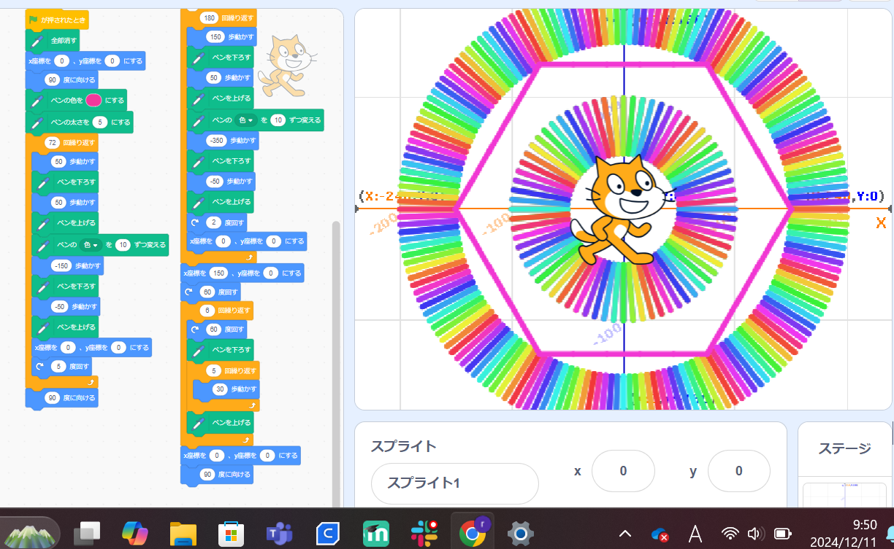
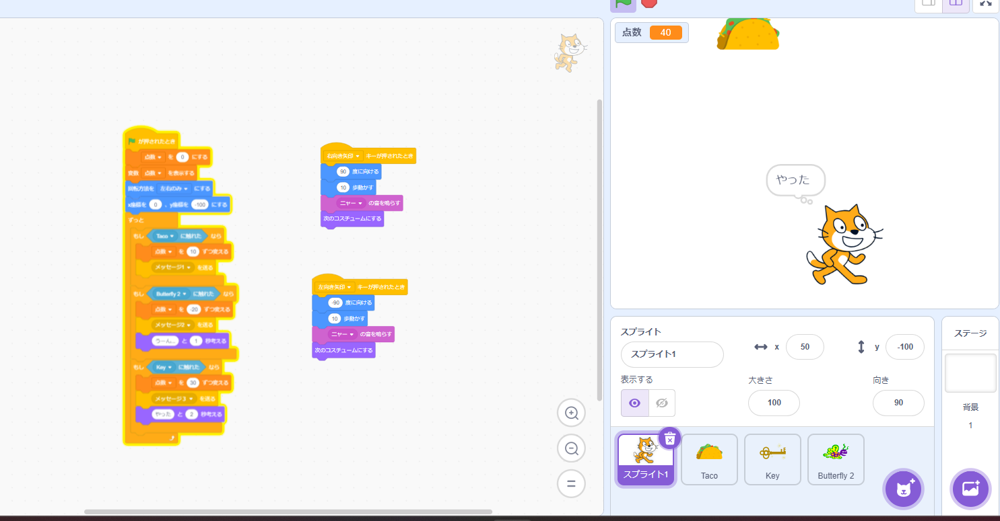

1週目のレポート ： 公大高専１年実習I-1
〇〇班〇〇番 ニックネーム
第1週目
1-1 サイエンスアート

1.内容
A-1-4の例を自分なりに改良して二つの輪を作り時間が余ったのでその間に六角形を書いた
2.感想
自分でどんな動きをするのかと考えながらじゃあこうしてみようと作っていくのがとても楽しかった。
1-2 ゲーム

1.内容
タコスと鍵と虫が落ちてきます。タコスはずっと落ちてきて触れると10点、カギは5秒から10秒のランダム感覚で落ちてきて触れると30点、虫は3秒から5秒のランダムで落ちてきて触れると―20点
2.感想
ここをこうしたらもっと面白くなる。だからこうしたい。という風に改良を加えていく作業がゲーム策税っぽいような気がして面白かった。
1-3 ホームページ作成
私のホームページ
1.内容
githubを使用し自分で自分のゲームアカウントのホームページを作成した
2.感想
ホームページの仕組みやほかのホームページのすごさなど様々なことを知ることができた。操作や基本的なプログラミングw理解しきれていないから難しく感じた。
各ページへのリンク
1週目のレポート
2週目のレポート
3週目のレポート
私のホームページ